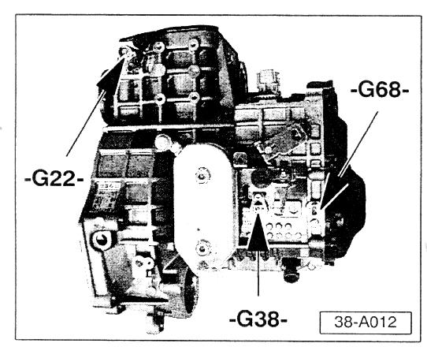
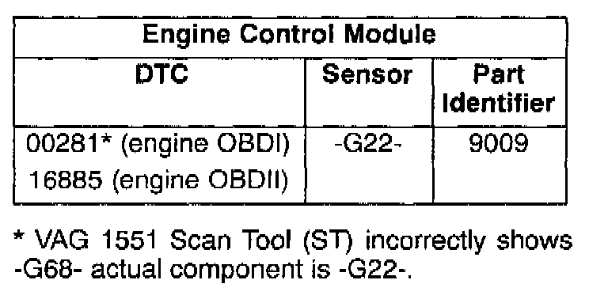

Speed Sensors - Location and Trouble Codes
Group: O1Number: 99-02
Date: Mar. 31, 1999
Subject:
Speed Sensors, Locating on Transmission and
Associated Diagnostic Trouble Codes.
Model(s):
All with O1M Automatic Transmission.
Service:

Use illustration to identify transmission Vehicle Speed Sensor (VSS) "G38", Vehicle Speed Sensor (VSS) "G68" and Speedometer Vehicle Speed Sensor (VSS) "G22".



The associated Diagnostic Trouble Codes (DTC) and Part Identifiers are listed.